Latest native v50n: additional rooms attached to the existing Main Hall. The Hall's source artwork, floor and controls are retained. These captures show the native application; this page is a static progress report.
Fixed this pass: lighting probes retained during export, reciprocal Hall views, continuous held-key doorway movement, neighbouring rooms visible through their doorway, panels and grille following wall cutaways, and overlapping door trim. Saint Roch now has a closed low-polygon study, a colliding plinth and a transparent hood.
Saint Roch uses the RISD photographs for its height and form. One $0.01 Muse reference pass helped the model study; its flawed side panel and overhead texture were rejected. The room currently uses flat colours. Official Saint Roch source.
Opus 5.5 independently accepted the rendering, movement and provisional flat Saint Roch installation in this pass. All twelve keyboard crossings pass at the unchanged tolerance. The complete map, sculpture likeness and room metres remain unaccepted. Read the scoped review.
Still open: source-fit Hall reveal and folded leaves; remaining Renaissance artworks and display cases; exact room and object placement; sculpture paint, damage and back detail; browser startup and real GPU performance. The Shell playtest also retains existing UI failures.
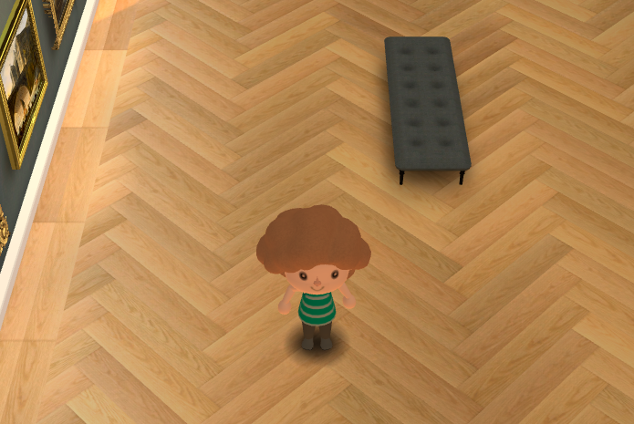
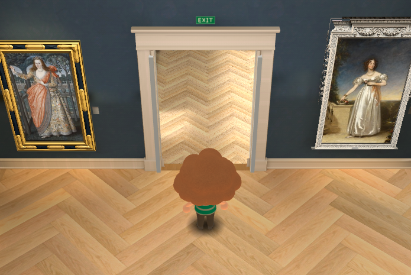
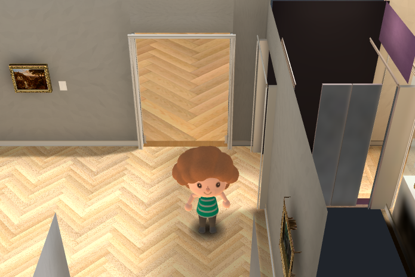
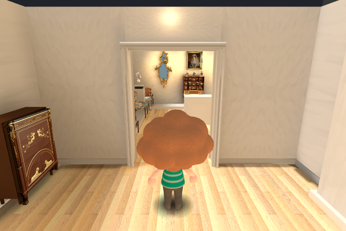
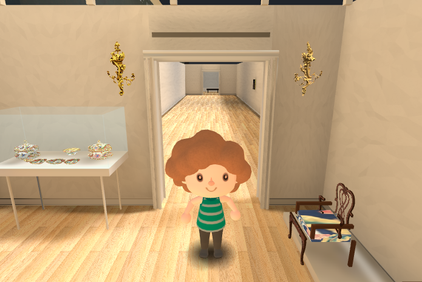
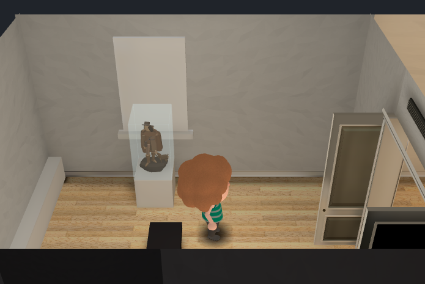
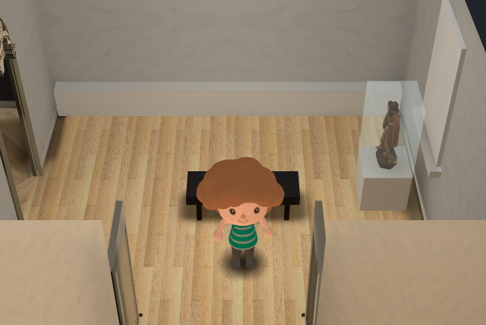
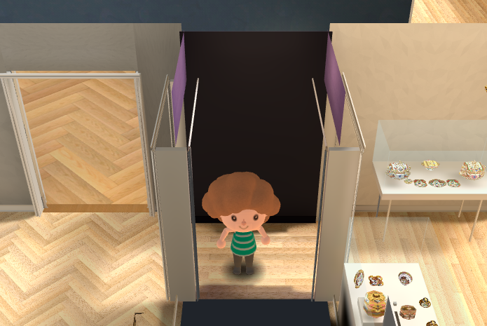
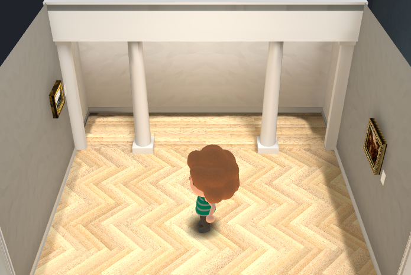
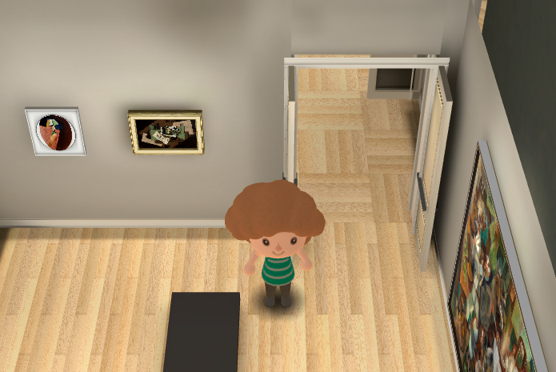
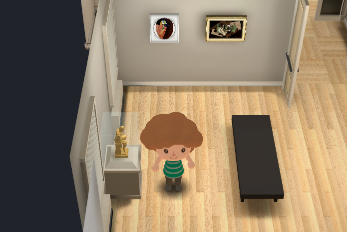
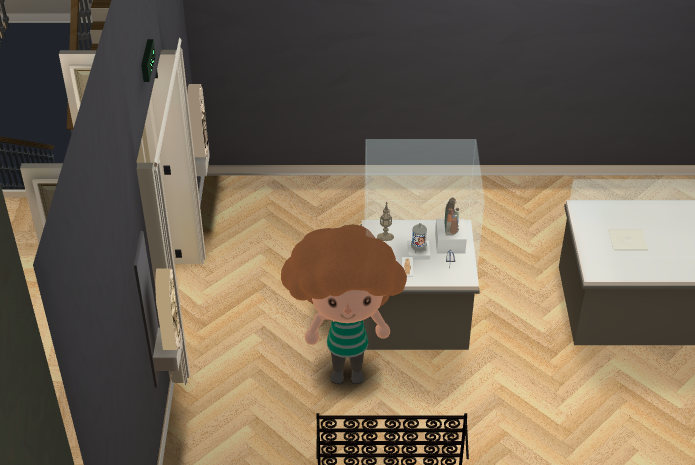
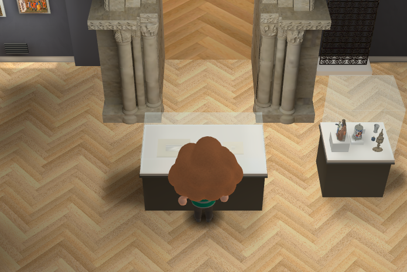
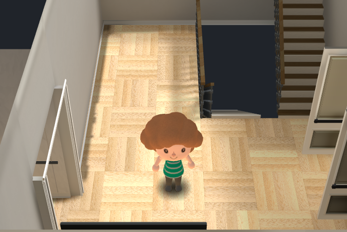